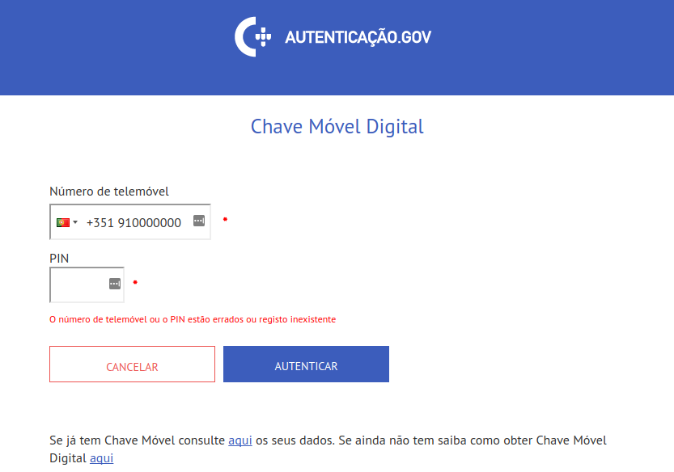
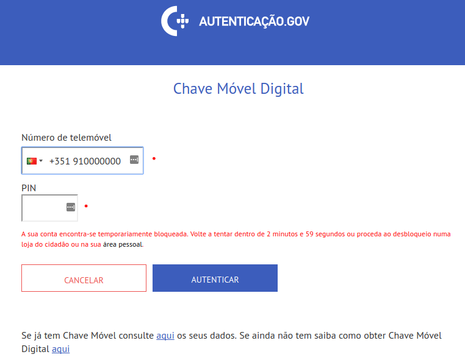
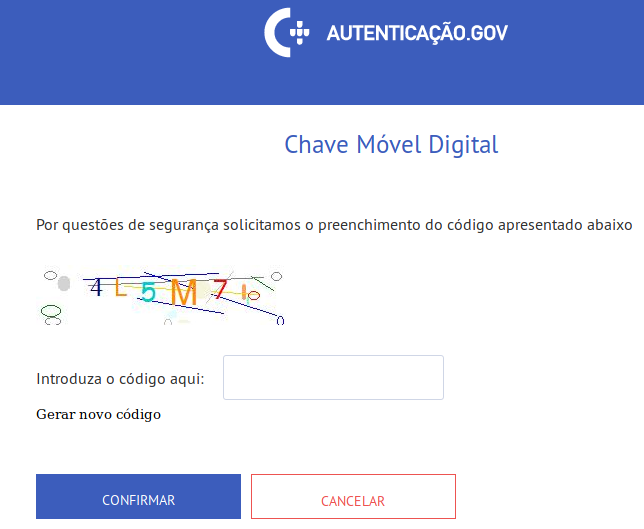

- Part 1 - The Weak Security Of The Portuguese Government’s Authentication System
- Part 2 - Chave Móvel Digital Multiple XSS Vulnerabilites
- Part 3 - Chave Móvel Digital Phone Number Leakage
- Part 4 - Chave Móvel Digital Log Out Not Working
Introduction
In this blog post I will be exploring the information leakage regarding if a phone number is registered or not. The system has a protection measure which can be easily bypassed. I will also provide proof-of-concept code.
Determining If A Phone Number Is Registered With An Account
If you enter a wrong phone number and PIN combination, you will be presented with the following message:
|  |
The error message reads:
O número de telemóvel ou o PIN estão errados ou registo inexistente
Which translates to:
Either the phone number or the PIN are incorrect or the account
is not registered.
This might seem like a good thing: the system tries to give the attacker the least information possible. The problem is that this is useless, since it can be easily bypassed.
The issue is that if the phone number is registered, after 3 failed
attempts, your account will be temporary locked. If the phone number is not
registered, no lock in will occur.
|  |
The good news is that if you enter the wrong PIN is entered again,
the temporary lockout period will be extended. Sometimes, you might be
asked to solve a captcha. My personal experience, however, suggests that
some simple machine learning can be used to bypass it. A better solution
here would be to use a more sophisticated solution, like Google’s ReCaptcha.
|  |
Once you know that a phone number is registered in the system, you
could apply social engineering attacks to obtain access to the user’s account.
For example, in Portugal, you can send SMS messages with any Sender ID.
Services like Amazon SNS are cheap
and easy to use. When you receive your second-factor authentication code,
it comes from the sender CMD (it stands for Chave Móvel Digital, or
Digital Mobile Key, in English). What an attacker could do is send the
user an SMS message with the sender id CMD saying that there is an issue
with the user’s account and that he needs to follow the provided link
to solve it. The link could perhaps exploit the XSS vulnerability described in the previous post
to get the user’s PIN.
While not being a critical issue, it renders the existing protection system useless. What they could instead do is treat all of the numbers the same: lock the access to all of them, regardless of the fact if they are registered or not. This should, however, be done with some care. If you follow the naive approach of inserting every entered phone number into the database and counting the number of login attempts, the attacker might be able to flood the database with numbers. Careful system design is needed here to prevent DoS attacks.
The same trick works with e-mail and Twitter authentication. These two authentication methods are, however, not enabled by default.
Proof-Of-Concept
I wrote a simple proof-of-concept code.
A quick reverse-engineering of the authentication process showed that in order to access the login page, you need to go thought a specific sequence of steps, you can’t just go to the login page directly.
In that sequence of steps, your browser exchanges cookies with the server.
Among those, there are 3 different session ids that you get through this
process and a request that checks if your browser supports JavaScript.
With every POST request a humanCheck value is sent. This value is
set on document load:
$(document).ready(function () {
$('#humanCheck').val('8FBB298A-DE46-4657-88E8-95F1F1224784');
$("#inputMobile").intlTelInput();
});I initially thought that that was a unique value generated on every request, acting as a nonce. Further analysis showed that this value is fixed. I’ve tried with different IP’s, different browsers and the value remained the same.
Conclusion
As demonstrated in this blog post, while the system tries to be ambiguous by not exposing if the phone number is registered with an account or not, it can be easily bypassed.
In the next and final blog post of this series I will explore another issue: the fact that the “Log Out” button does not actually log you out.